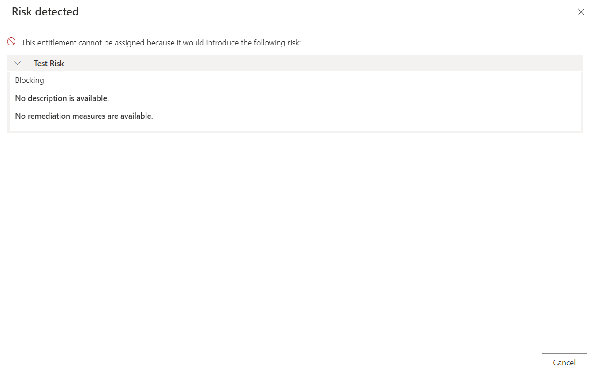
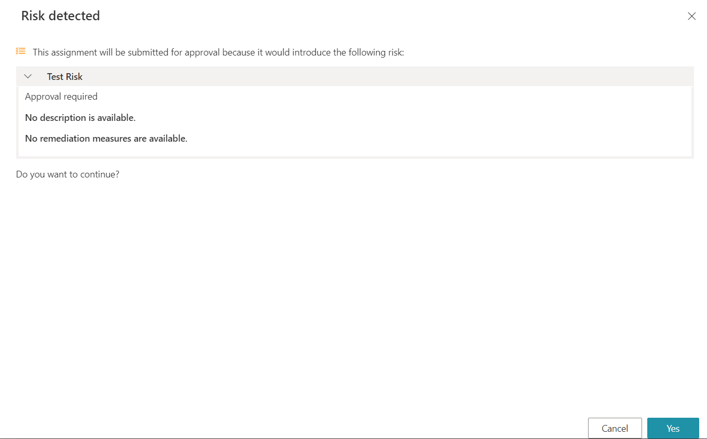
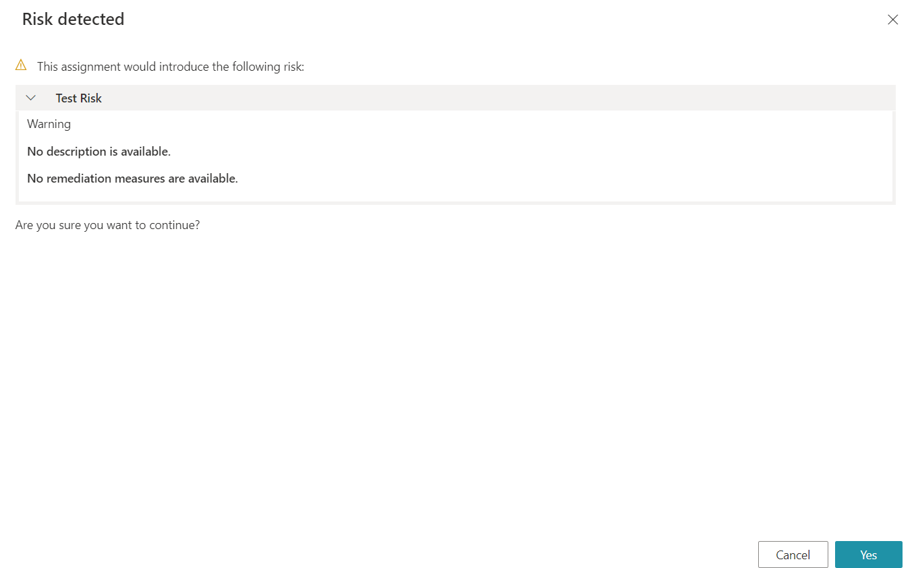
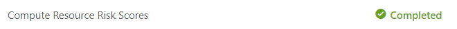

Risk Management
The Risk Management module provides tools for identifying assignments of entitlement that pose a security risk. The module helps analyze and mitigate different kinds of risks such as Segregation of Duties or High Privilege. This is the basis for auditing and performing access certifications with a risk-based method.
Overview
A Risk describes a sensitive situation of entitlement assignments that needs to be monitored.
Risk management is essential to auditing. End-users can define models of risks, assigned to identities based on their entitlement assignments. This action identifies identities whose entitlement landscape might pose a threat or a surface of attack. The identified risks for a given identity inform the auditor about the exact nature of the threat to help making decisions and finding methods of remediation.
To identify the identities that represent the highest risk, Identity Manager computes a risk score for all identities, based on both the roles already assigned and the roles that are subject of the current request. The higher the score, the higher the threat. The identities with the highest risk scores are the priority of the next Access Certification campaign.
See the Manage Risks topic for additional information on how to use the risk management module to identify entitlement assignments that pose a security risk.
Risk Definition
A Risk is an object that describes a sensitive situation of assignments of entitlements.
The assignment of a risk to an identity highlights, for a potential auditor, the need to closely reconsider said the assignments of said identity.
A risk is always:
- part of a Policy;
- assigned to identities belonging to a specific entity type that was decided during the risk creation;
- organized inside a Risk Management ;
- linked to an Risk Management .
Risk Type
The type of a risk informs the auditor about the exact nature of the situation that the risk describes. It helps understand the possible causes, the importance of the security threat and methods of remediation.
Identity Manager supports two types of risks:
- a segregation-of-duties risk identifies a threat due to the conjunction of two or more fine-grained entitlements for the same identity, for example if an identity requests an entitlement and is also the validator for said entitlement;
- a high-privilege risk identifies a threat due to the assignment of one or more highly sensitive entitlements, for example the
Domain Usergroup in an Active Directory.
Risk Exemption Policy
All risks are assigned an exemption policy that defines the behavior of Identity Manager regarding risks when entitlements are manually requested.
Blocking
Risk-triggering permission requests can be forbidden with the blocking exemption policy. If at least one of the detected risks in the requested entitlement set has the blocking exemption policy, then Identity Manager does not allow the set to be requested at all. A message is displayed and the request must be cancelled:

Approval Required
Yet, instead of being unilaterally forbidden, risk-triggering permission requests can be authorized with an additional role review approval with the approval required exemption policy. If at least one of the detected risks in the requested entitlement set has the approval required exemption policy, then Identity Manager adds a step where this new set must be reviewed by a knowledgeable user like a security officer. A message is displayed and the request can be continued or cancelled:

If the request is performed, then a line appears on the Role Review screen.
The workflow state of said request is Manual, Pending approval (risks) and shows the following risk icon.
Warning
Risk-triggering permissions can also be allowed with only a warning with the warning exemption policy. If all detected risks in the requested entitlement set has the warning exemption policy, then Identity Manager displays a message and the request can be continued or cancelled:

Upon Profile
The blocking and approval required exemption policies can be ignored according to the profile of the user and their scope of responsibility, with respectively the blocking upon profile and approval required upon profile exemption policies. Then they can be assimilated to the warning policy if the user has the right permission, respectively /ProvisioningPolicy/Risk/OverrideBlocking and /ProvisioningPolicy/Risk/OverrideApproval, otherwise they behave like the blocking and approval required policies.
Like in the example below, the two permissions can be chained together. For the connected user, a risk that would have been blocking otherwise, is just a warning.
<AccessControlRule Profile="Administrator" EntityType="Risk" Identifier="Administrator_Risk_Override" DisplayName_L1="Administrator_Risk_Override"> <Entry Permission="/ProvisioningPolicy/Risk/OverrideBlocking" CanExecute="true" /> <Entry Permission="/ProvisioningPolicy/Risk/OverrideApproval" CanExecute="true" /> </AccessControlRule>
Risk Assignment
Risk Rules
Risk are assigned to resources manually by a knowledgeable user or automatically, by the Evaluate Policy algorithm.
When a risk is assigned to a resource, a new identified risk is created under the UP_IdentifiedRisks table.
Automatic assignment of risks is based on Risk rules. For each new fine-grained assignment on a resource, risk rules are applied. If one of the rules matches the resource state, the related risks are assigned to the resource. Those rules are themselves based on fine-grained entitlements, such as an Active Directory account or group membership, modeled by the Resource Type within Identity Manager.
A risk rule states that a risk is assigned to a resource if the resource has one or several specific fine-grained entitlements. The number of triggering entitlements depends on the risk type. For example, the segregation-of-duties risks depends on at least two entitlements. The other types of risk depend on one or more entitlements.
Fine-grained entitlement
A fine-grained entitlement assigned to a resource-identity in Identity Manager is modeled by navigation property values of the resources owned by the identity.
To write a risk rule, the end-user has to describe a fine-grained entitlement for a resource-identity.
This is the way:
- Choose an Entity Type of which the resource-identity could be owner.
- Choose a navigation property of that entity type.
- Choose a value for that navigation property. The value would be a resource from the unified resource repository.
This final value is a fine-grained entitlement, linked to the owner resource-identity through the navigation property and the ownership relationship.
Risk Score
Once Risk are assigned to identities, Identity Manager computes a risk score for each relevant identity.
This score allows an auditor to prioritize the Access Certification campaign. The identity with the highest risk score poses a more serious security threat and has to be handled first.
During access certification, assignments that are responsible for triggering the risk will be examined and then, kept or discarded.
The risk score computation is performed by the risk score task.
